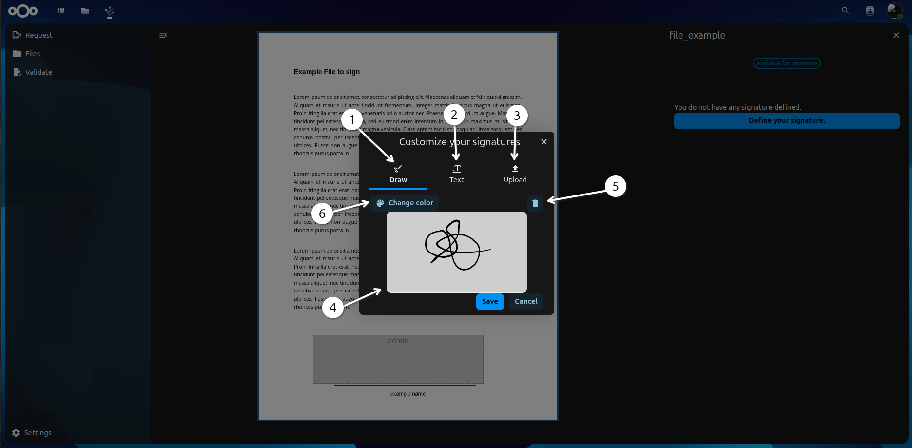
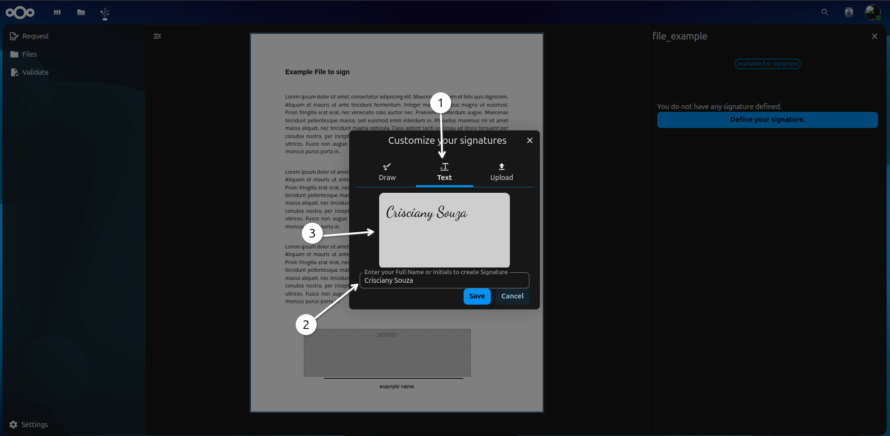
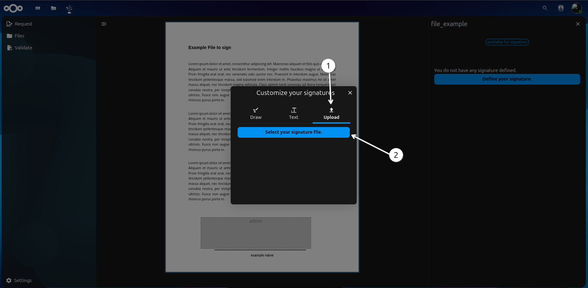
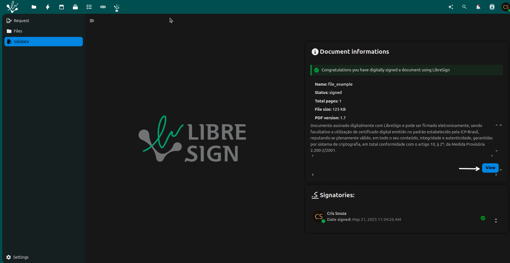
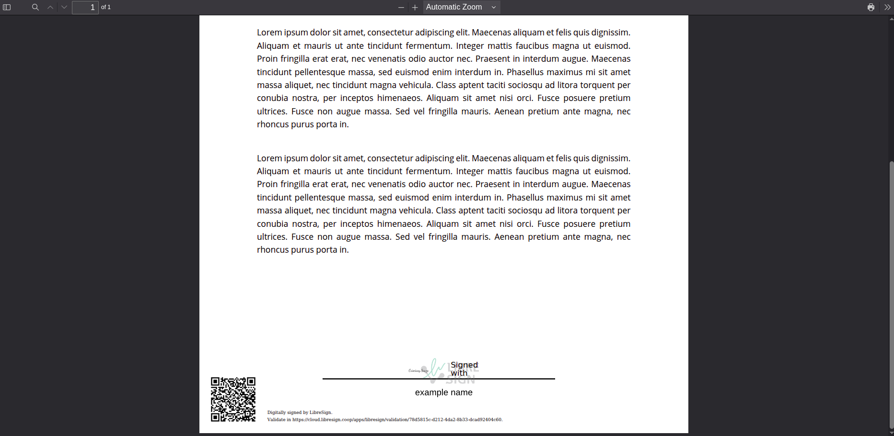

Functionality
Screens
Main screen
1 - Upload: in this option you can upload a file to the system. The file must be in .pdf format and contain the data to be processed.
2 - Choose from files: You can choose a file from the system to be processed. And this file is necessarily in .pdf format and contains the data to be processed.
3 - Upload from URL: this option allows you to upload a file from a URL.
4 - Request: back to the previous screen.
5 - Files: here you can see the files that have already been uploaded to the system. You can also delete them if you want.
6 - Validate: you can validate the file that was uploaded. The system will check if the file is in .pdf format and if it contains the data to be processed.
Files screen
- In this page you can see your files. Can see the status:
- Green: signed;
The document has been signed by all required signatories. There are no further actions pending. It can be downloaded, validated, or stored securely.
- Orange: warning;
The document has some pending issues or inconsistencies. This may mean that:
One or more signatories have not yet completed the signature.
There are problems with the digital certificate validation.
The signature deadline is approaching or has expired.
Note
Recommended action: click on the document to view details and resolve any pending issues.
- Red: draft;
The document is still being prepared. This may include:
Signature areas not defined.
Signatories not configured.
Document not yet sent for signature.
Note
Action required: finalize the settings and send for signature.
Validate screen
1 - Upload: in this option you can upload a file to the system. The file must be in .pdf format and contain the data to be processed.
2 - From UUID: this option allows you to upload a file from a URL.
Sign files
Choose file - Upload
Here you can choose the file to be signed. The file must be in .pdf format and contain the data to be processed. You can also choose the file from the system or upload a new one.
File loaded
- Here you can see the file that was loaded. You can also see the status of the file. The status can be:
Red: draft;
Add signature
1 - Button Add signer, this button allows you to add a signature to the file. You can choose the type of signature you want to add.
For next step to sign the file. You need to click the button Add signer.
Fill in data
Here you need to fill in the data to be signed. Type you email and the name you want to sign the file. After that, you need to click the button save.
Check the datas
If your data is correct, you can click the button next.
Choose location to sign
1 - Message: Say you need to choose the location to sign the file.
2 - Click on the user that appears.
3 - File: Here you will sign in the location you chosen in the file.
4 - Request button: This button allows you to request the signature of the file.
See the file signed
1 - Files: click here to see the files that were signed.
- 2 - status file: here you can see the status of the file. The status can be:
Orange: warning;
Check your email
Here you will recieve the email to sign the file. Click on the link to Sign>>file_example<< the file.
Confirm the signature
1 - Click on the file to sign.
2 - Click on the button to sign the file.
Sign the file
1 - Check your signature.
2 - Here you can see the way you will sign the file.
3 - Click on the button Sign the document.
Type of signature
- Here you will see the type of signature you chose to sign the file:
 1 - This you can draw your signature.
2 - This you can type your signature.
3 - This you can upload an image of your signature.
4 - This space you can draw your signature using the mouse.
5 - If you do not like what you draw, you can click here to clear and draw again.
6 - In this option you can choose colors to draw your signature.
Type signature - Fill
- Here you will see the type of signature you chose to sign the file:
 1 - Type option.
2 - This fill you can type your signature.
3 - In this space you can see how your signature will look like.
Upload signature - Fill
- Here you will see the type of signature you chose to sign the file:
 1 - Upload option.
2 - Here you can upload an image of your signature. The image must be in .png, .jpg or .jpeg format.
Signed file

Here you can see the information of the file that was signed. You can click on the button to see the file signed.
Signed file

Here you can see the file that was signed, the QR code that was generated and the autentication link.